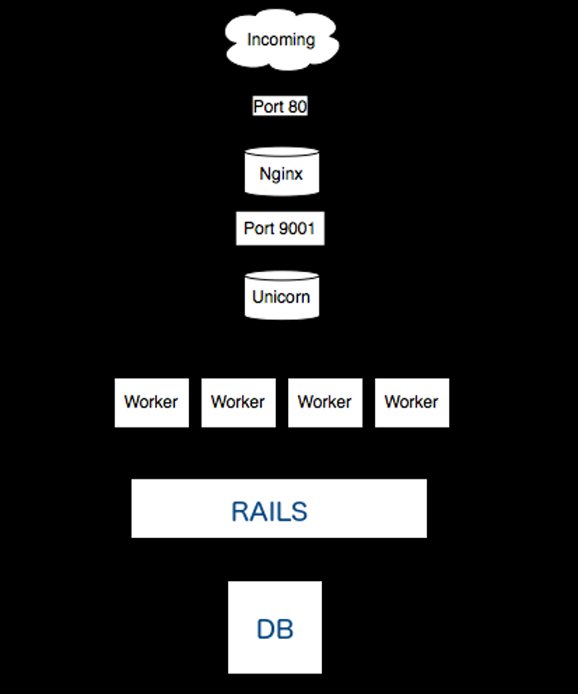

Deployment
rails app deployment
July 29, 2014
July 29, 2014

sudo apt-get install nginx
touch /etc/nginx/sites-available/deploy_demo.conf
ln -s /etc/nginx/sites-available/deploy_demo.conf /etc/nginx/sites-enabled/deploy_demo.conf
curl -sSL https://get.rvm.io | bash
source ~/.bashrc
rvm requirements
rvm install 2.0.0
source ~/.rvm/scripts/rvm
gem unicorn
https://github.com/defunkt/unicorn/tree/master/examples
bundle exec unicorn -c config/unicorn.rb -D -E production
bundle exec cap install
bundle exec cap production deploy
bundle exec cap production deploy:start